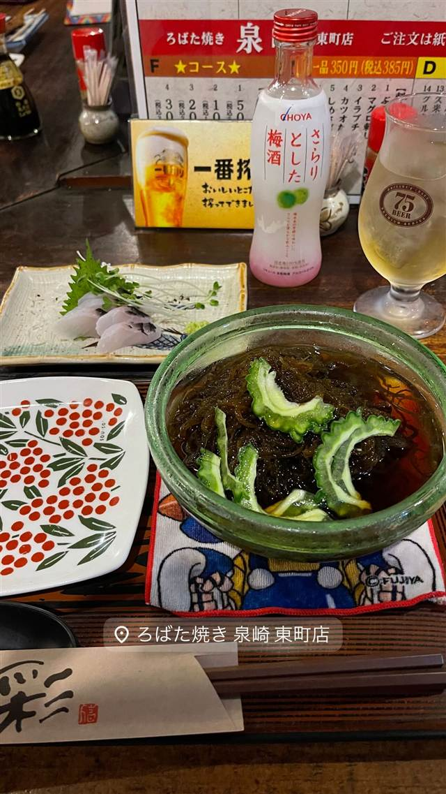
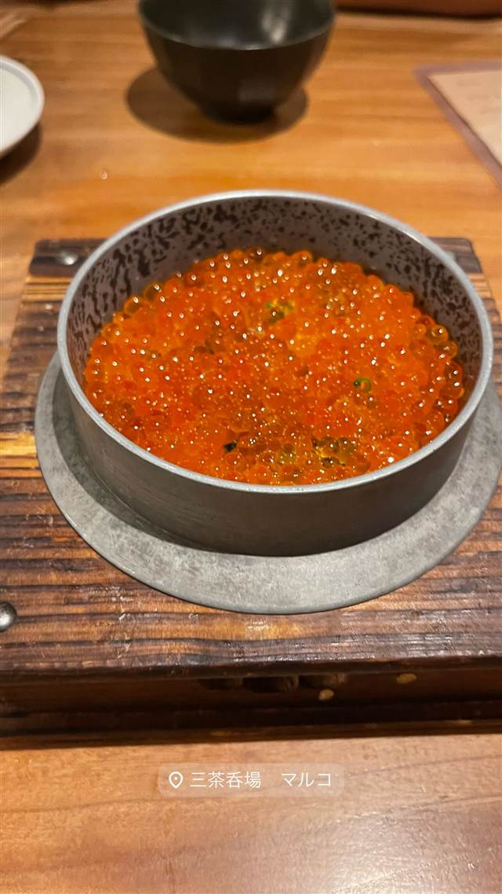
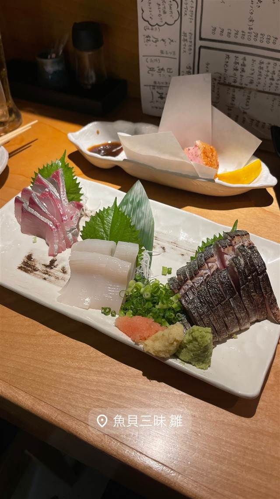
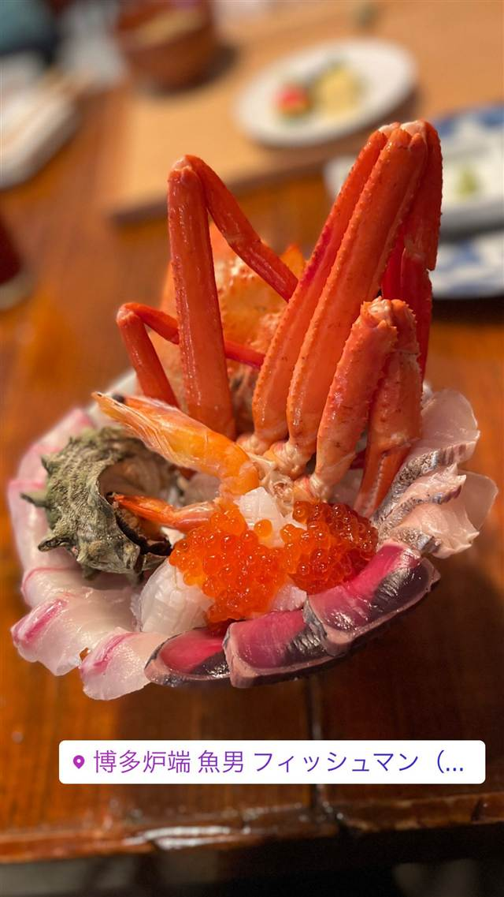

海鮮・魚 · 海鮮居酒屋 · 那覇市東町
炉ばた焼 泉崎 東町店
1973年から一品300円均一で焼き物を出す老舗
ろばた焼き 泉崎 東町店
1973年創業、半世紀以上続く老舗炉端焼き居酒屋。下町情緒あふれる店内で、焼き物や一品料理をリーズナブルな均一価格で楽しめる。
TRIVIA
豆知識
- 1973年創業の老舗で、料理の多くが1品300円均一の価格
REVIEWS
世間の評判
3.08食べログ
コスパの良さと目の前の炭火焼き
- 新鮮な魚介と量の多さでコスパの良さを評価する声が多い
- 目の前で焼いてくれるライブ感のある雰囲気を評価する声がある
- 場所が分かりにくいという指摘もある
食べログ 口コミ25件
| 創業 | 1973年創業（泉崎本店として） |
|---|---|
| 系譜 | 元々は泉崎で創業し、その後東町へ移転・展開。 |
| 看板 | 焼き物・魚焼き・シュウマイなど、一品300円均一の居酒屋メニュー |
| こだわり | 一品300円均一の炉端焼きスタイルで、下町の雰囲気を残す店内。 |
| どこから | 遠方 |
| 営業時間 | 月〜土 17:30-00:00 日 休み |
| 予算 | 夜 ¥2,000～¥2,999 |
| 定休日 | 日曜・祝日 |
| 場所 | ゆいレール旭橋駅 徒歩5〜10分 沖縄県那覇市東町18-22 |
| メモ | ゆいレール旭橋駅から徒歩5分。カウンター・テーブル・座敷あり。 |
食べたもの：もずく酢と刺身
NEARBY
近い店・同じ系統の店
-
 海鮮居酒屋 赤坂
みやざき料理 でんでんでん
宮崎直送の地鶏と麦を混ぜたごはんの冷や汁とチキン南蛮
昼 ¥1,000～¥1,999 夜 ¥5,000～¥5,999
海鮮居酒屋 赤坂
みやざき料理 でんでんでん
宮崎直送の地鶏と麦を混ぜたごはんの冷や汁とチキン南蛮
昼 ¥1,000～¥1,999 夜 ¥5,000～¥5,999
-

海鮮居酒屋 三軒茶屋駅 三茶呑場マルコ 新潟の塩引鮭とイクラを使う名物の締め釜飯 夜 ¥4,000～¥4,999 -

海鮮居酒屋 武蔵溝ノ口駅／溝の口駅 魚貝三昧 雛 1号店 築地から直送される鮮魚を使った刺身が自慢 夜 ¥5,000～¥5,999 -
 海鮮居酒屋 渋谷
魚屋豪椀
築地直送の鮮魚と活き車海老の踊り食いが名物
夜 ¥4,000～¥4,999
海鮮居酒屋 渋谷
魚屋豪椀
築地直送の鮮魚と活き車海老の踊り食いが名物
夜 ¥4,000～¥4,999
-

海鮮居酒屋 薬院駅 博多炉端 魚男 FISHMAN 長浜市場直送の魚介をエスプーマなどで彩る創作炉端焼き -
 海鮮居酒屋 新橋駅
魚焼男 新橋本店
豊洲・沼津港から毎朝直送の鮮魚を炭火でじっくり焼く
夜 ¥5,000～¥5,999
海鮮居酒屋 新橋駅
魚焼男 新橋本店
豊洲・沼津港から毎朝直送の鮮魚を炭火でじっくり焼く
夜 ¥5,000～¥5,999
ONSEN & SAUNA